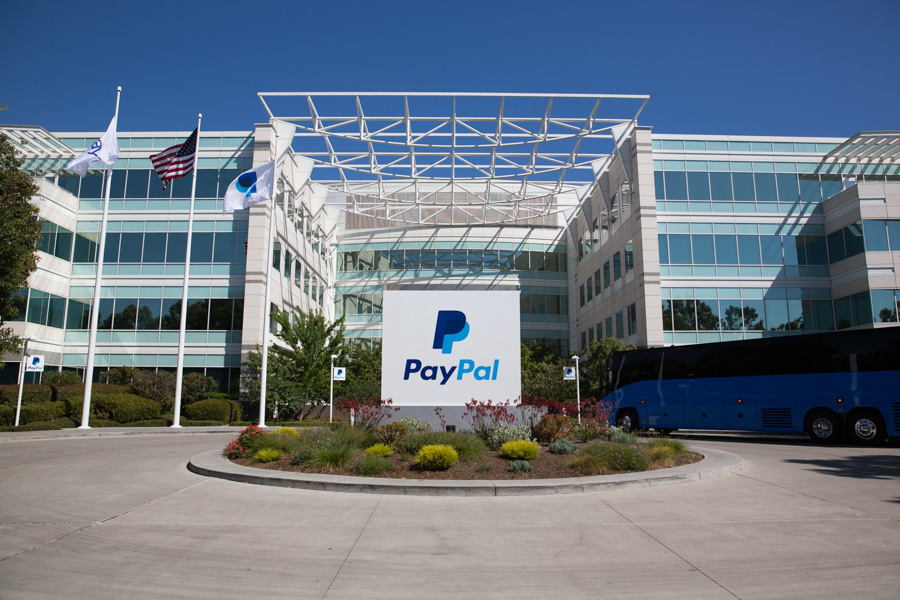
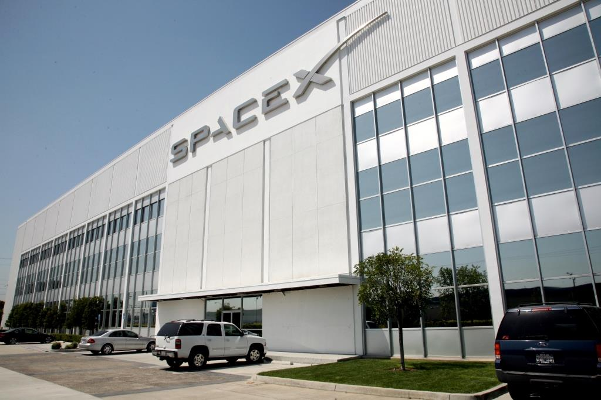
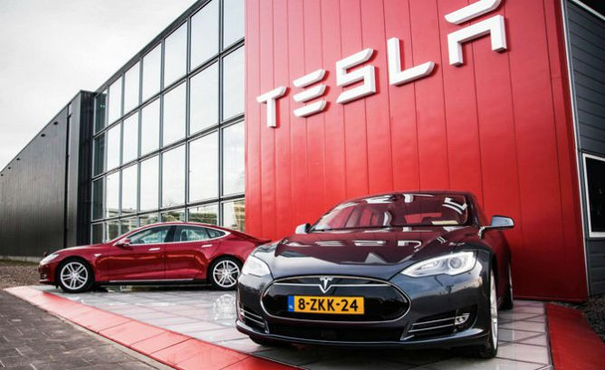

Elon Musk (sinh ngày 28 tháng 6 năm 1971) là một nhà phát minh, doanh nhân, tỉ phú người Nam Phi. Ông được biết đến nhiều nhất vì đã sáng lập SpaceX và đồng lập Tesla Motors và PayPal. Tại SpaceX ông là CEO và Trưởng bộ phận thiết kế và ở Tesla Motors ông là Chủ tịch, CEO và Kiến trúc sư sản phẩm. Musk cũng là Chủ tịch của SolarCity.
Từ nhỏ đã tỏ ra là một thần đồng, ông sang Canada năm 17 tuổi rồi sau đó là Hoa Kỳ để học tập và theo đuổi ước mơ phát triển các công nghệ thay đổi tương lai loài người. Ông là người đóng góp quan trọng vào sự phát triển của thanh toán trực tuyến, phát triển năng lượng sạch và các hệ thống giao thông tiên tiến, chinh phục không gian,... Ông là người gây cảm hứng cho nhân vật Tony Stark trong Iron Man. Ông là người mà nhiều người hâm mộ.

Musk đồng sáng lập X.com, một công ty về dịch vụ tài chính trực tuyến và thanh toán qua email tháng 3 năm 1999. Một năm sau đó, trong một cuộc sáp nhập 50/50 về vốn, X.com mua lại Confinity, một hãng vận hành một hệ thống thanh toán đấu giá có quy mô tương tự như X.com, gọi tên là Paypal. Musk đã sắp xếp thương vụ này do niềm tin vào việc chuyển khoản trực tiếp đang nở rộ của công nghệ P2P. Musk tin rằng nhánh con Confinity sẽ trở thành phương tiện cần thiết để tích hợp và phát triển một nền tảng thanh toán giữa các cá nhân bên trong X.com. Công ty kết hợp ban đầu thu nhận X.com làm tên tập đoàn, nhưng vào tháng 2 năm 2001, X.com đổi tên chính thức của nó thành Paypal Inc. Musk đã cổ vũ mạnh mẽ cho trọng tâm của một Paypal mới nhằm vào hệ thống thanh toán toàn cầu và rời khỏi những sự cung cấp tài chính lõi của X.com.
Sự phát triển ban đầu của PayPal phần lớn là do một chiến dịch phát triển rộng khắp thành công của Musk. Tháng 10 năm 2002, PayPal được eBay mua lại với giá 1.5 tỷ giá trị cổ phiếu. Vào thời điểm bán, Musk, cổ đông lớn nhất của công ty, nắm 11.7% cổ phiếu của PayPal.

Musk thành lập công ty thứ ba của ông, Space Exploration Technologies (SpaceX), vào tháng 6 năm 2002 và hiện là CEO và Giám đốc Kỹ thuật của tập đoàn này. SpaceX phát triển và chế tạo các phương tiện phóng ra không gian với trọng tâm hướng vào việc phát triển công nghệ tên lửa. Hai tên lửa đầu tiên của công ty là Falcon 1 và Falcon 9 và phi thuyền đầu tiên của nó mang tên Dragon.
SpaceX đã giành được hợp đồng 1,6 tỷ đô la với NASA ngày 23 tháng 12 năm 2008, cho 12 chuyến bay của Falcon 9 và Dragon vào Trạm Vũ trụ Quốc tế ISS, thay thế cho Space Shuttle của NASA sau khi nó hết thời gian hoạt động năm 2011. Ban đầu, Falcon 9/Dragon sẽ thay thế chức năng vận tải hàng hóa của Shuttle và việc vận chuyển phi hành gia sẽ được thực hiện bởi Tàu vũ trụ Soyuz. Tuy nhiên, SpaceX đã thiết kế Falcon 9/Dragon nhằm vào việc vận chuyển phi hành gia và Ủy ban Augustine (Cơ quan Hoa Kỳ phụ trách các chuyến bay có người lái vào vũ trụ) đã khuyến nghị việc vận tải hành khách bởi các công ty thương mại như SpaceX

Tesla Motors được Martin Eberhard và Marc Tarpening gây vốn vào tháng 7 năm 2003, Musk đầu tư thành lập tháng 2 năm 2004 và trở thành Chủ tịch Hội đồng Quản trị; nhưng đam mê của ông với ô tô điện đã có từ thời còn trẻ. Do ảnh hưởng của khủng hoàng tài chính thế giới năm 2008 và kéo theo đó là một đợt cắt giảm nhân lực bắt buộc ở Tesla, Musk buộc phải đảm nhận thêm vị trí CEO. Ông khẳng định đường hướng của công ty là đầu tiên phát triển những chiếc xe thể thao hạng sang để thu hút sự quan tâm tới xe điện và kiếm lợi nhuận ban đầu nhằm nuôi mục đích lâu dài là cung cấp ô tô điện phổ biến cho người bình dân, giảm đáng kể lượng tiêu thụ dầu thô toàn cầu.
Musk đóng vai trò tích cực trong công ty và đặc biệt chỉ đạo thiết kế các mẫu sản phẩm cũng như định hướng chiến lược, nhưng dù là CEO ông không liên hệ sâu vào việc điều hành kinh doanh hàng ngày. Ông được cho là nắm 32% cổ phần tại Tesla, tập đoàn này được định giá 13.9 tỷ đô la vào tháng 7 năm 2013
Mẫu xe điện thể thao đầu tiên, Tesla Roadster 2008, với giá khởi điểm 109 ngìn đô la/chiếc bán được khoảng 2500 đơn vị tới 31 quốc gia, đồng thời bản thử nghiệm của nó nhận giải "Phát minh xuất sắc nhất" năm 2006 của tạp chí Time trong lĩnh vực "Phát minh về vận tải". Tesla Model S, chiếc sedan xuất hiện trên thị trường tháng 6 năm 2012 đã trở thành hiện tượng của năm, đạt một loạt giải thưởng như giải Xe tiêu biểu nhất của năm 2013 của tạp chí Automobile. Nó bán được 2650 đơn vị trong năm 2012 ở Hoa Kỳ và 4900 đơn vị tại Bắc Mỹ chỉ trong quý I 2013, trở thành mẫu xe điện bán chạy nhất trong khu vực. Model X, mẫu xe SUV-minivan, được giới thiệu tháng 9 năm 2012 và sẽ được bán ra năm 2014.